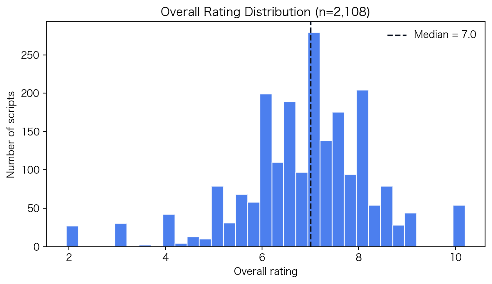
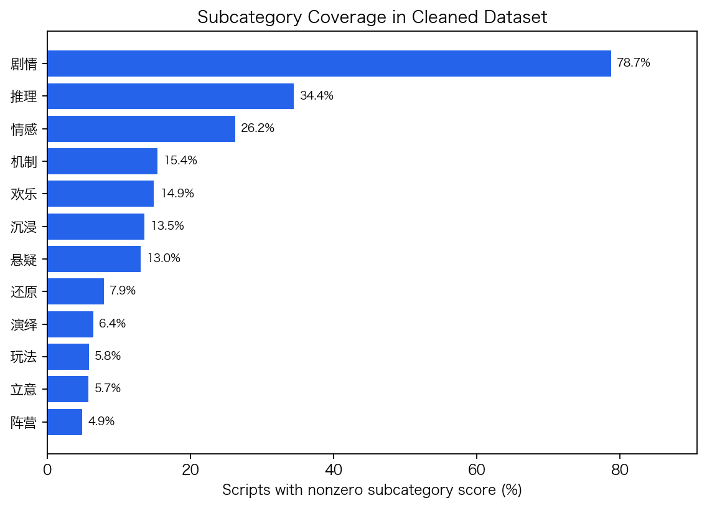
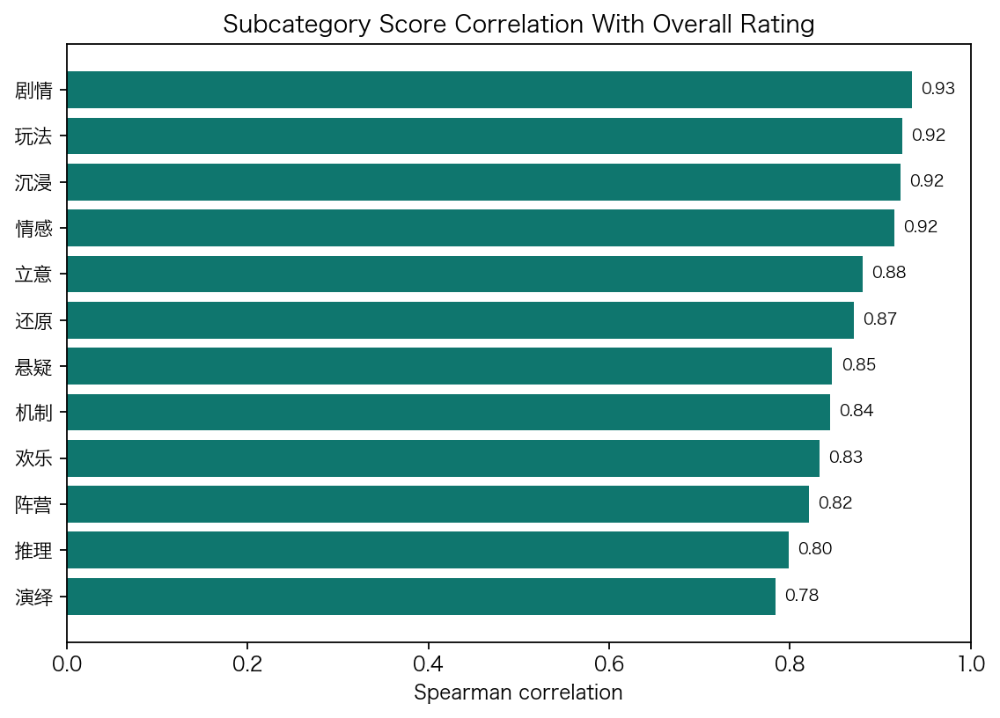
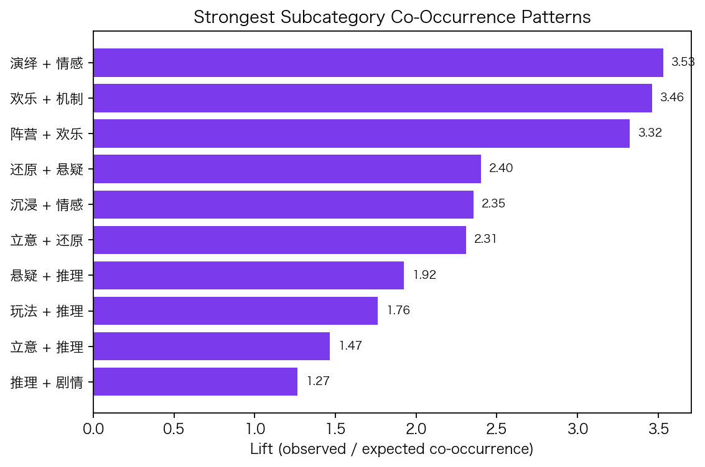
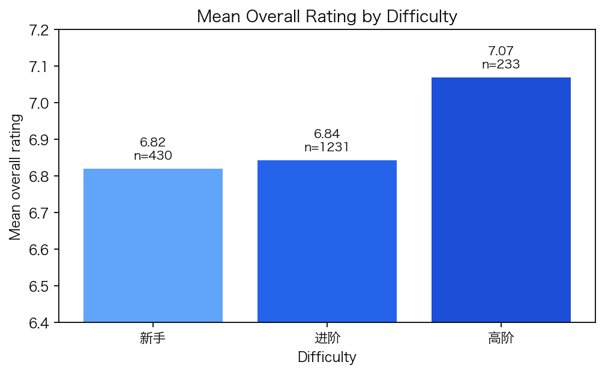
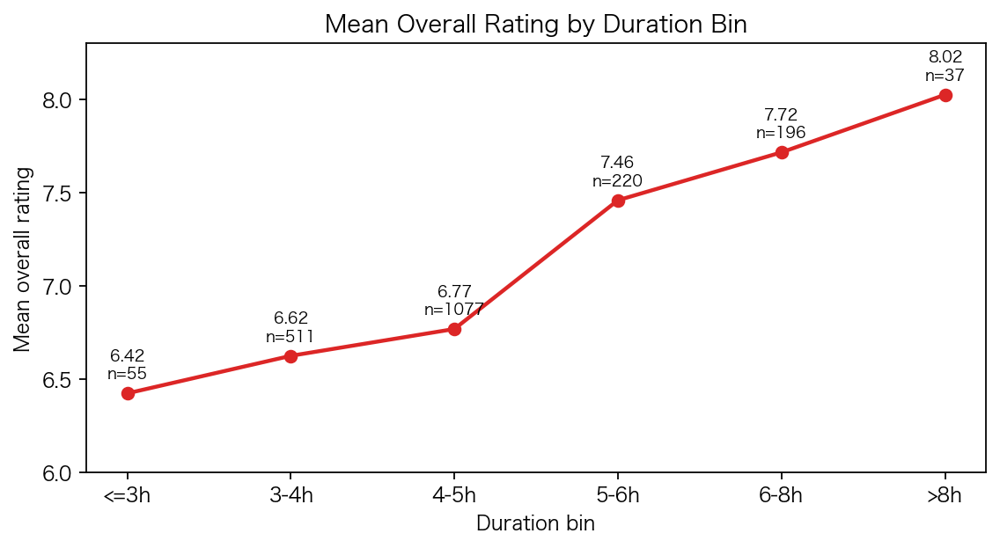

Miquan Ratings Research Update
Ratings Data Analysis Update
Concise summary of current scraping, cleaning, and descriptive analysis results for the ratings dataset.
Executive Summary
The current analysis combines ratings from three outputs, removes duplicate and failed-result rows, and focuses on 2,108 scripts with meaningful overall ratings. The rating distribution is centered around 7, while popularity variables are highly skewed.
Scraping And Cleaning Pipeline
- Script titles come from two source lists. The first is the original catalog-derived Excel/search list, represented in the pipeline by
search_terms.csvwith 1,925 titles; this list is mostly scripts published before 2023. - The second source is the 狐小狸 workbook (
狐小狸剧本杀.xlsx), which contains 3,297 raw rows and was processed into 2,565 search terms. This source includes newly published scripts as well as older scripts. - The two source lists overlap substantially: 1,532 titles appear in both lists, producing 2,958 unique titles after combining the processed search terms.
- The Appium pipeline collects visible rating fields from logged-in app sessions, with relaxed title matching for punctuation, reordered names, suffixes, and related search-result variants.
- OpenAI API use is limited to search-query recovery when the app search cannot find a clear exact match. The scraper sends the original script title plus matching rules/examples to the API and asks for up to five alternative Chinese search queries in JSON format.
- Rows with
overall_rating == 0oroverall_rating == 1were excluded from the main analysis because they appear to be missing or failed-result rows.
| Source file | Rows |
|---|---|
miquan_ipad_ratings.csv | 1,657 |
huxiaoli_ipad_ratings.csv | 1,316 |
miquan_ratings.csv | 406 |
Overall Rating And Popularity

| Measure | Mean | Median | 25th pct. | 75th pct. | Max |
|---|---|---|---|---|---|
| Overall rating | 6.91 | 7.00 | 6.20 | 7.80 | 10.00 |
| Played count | 24,109 | 10,269 | 2,934 | 27,007 | 344,824 |
| Review count | 1,507 | 363 | 64 | 1,372 | 49,388 |
- Ratings are concentrated around 7.0, with most scripts between 6.2 and 7.8.
- Popularity variables are much more skewed than ratings. A small number of scripts have very high played/review counts.
want_countremains under review: positive values below 100 and positive fractional values are currently flagged as suspicious for popularity-specific analysis.
Subcategory Distribution
Subcategory fields are not complete for every script. The table below reports coverage and nonzero-score summaries for the most informative subcategories.

| Subcategory | Nonzero count | Coverage | Mean nonzero score | Median nonzero score |
|---|---|---|---|---|
| 剧情 | 1,660 | 78.7% | 6.97 | 7.00 |
| 推理 | 725 | 34.4% | 6.84 | 6.80 |
| 情感 | 553 | 26.2% | 7.11 | 7.10 |
| 机制 | 324 | 15.4% | 6.72 | 6.70 |
| 欢乐 | 314 | 14.9% | 6.94 | 6.90 |
| 沉浸 | 285 | 13.5% | 7.18 | 7.20 |
| 悬疑 | 275 | 13.0% | 6.92 | 6.90 |
| 演绎 | 135 | 6.4% | 7.39 | 7.40 |
| 玩法 | 122 | 5.8% | 7.45 | 7.40 |
Columns with no nonzero values in the current cleaned data: 故事, 难度, 互动, 本格, 变格, 恐怖, 硬核.
Subcategory Correlation With Overall Rating
Active subcategory scores are strongly aligned with overall rating. The strongest correlations are concentrated in story and experience dimensions.

| Subcategory | Nonzero count | Spearman correlation with overall rating |
|---|---|---|
| 剧情 | 1,660 | 0.935 |
| 玩法 | 122 | 0.924 |
| 沉浸 | 285 | 0.922 |
| 情感 | 553 | 0.915 |
| 立意 | 121 | 0.880 |
| 还原 | 166 | 0.870 |
| 悬疑 | 275 | 0.847 |
| 机制 | 324 | 0.845 |
| 推理 | 725 | 0.798 |
High-rated scripts differ most from below-median scripts on 立意 (+1.66), 演绎 (+1.39), 剧情 (+1.30), 阵营 (+1.29), and 机制 (+1.28).
Subcategory Co-Occurrence Patterns
Most scripts with subcategory data have a limited bundle of dimensions. Exactly three active subcategory ratings appear in 1,440 scripts, or 68.3% of the cleaned dataset.

Strongest co-occurring pairs by lift
| Pair | Both count | Support | Lift |
|---|---|---|---|
| 情感 + 演绎 | 125 | 5.9% | 3.53 |
| 机制 + 欢乐 | 167 | 7.9% | 3.46 |
| 欢乐 + 阵营 | 51 | 2.4% | 3.32 |
| 悬疑 + 还原 | 52 | 2.5% | 2.40 |
| 情感 + 沉浸 | 176 | 8.3% | 2.35 |
Most common exact bundles
| Subcategory bundle | Scripts | Share of cleaned dataset |
|---|---|---|
| 剧情 + 推理 + 悬疑 | 181 | 8.6% |
| 剧情 + 情感 + 沉浸 | 175 | 8.3% |
| 剧情 + 机制 + 欢乐 | 166 | 7.9% |
| 剧情 + 推理 | 156 | 7.4% |
| 剧情 + 推理 + 情感 | 133 | 6.3% |
These bundles correspond to recognizable positioning groups: mystery-oriented scripts, emotional/immersive scripts, and mechanism/fun scripts.
Metadata Parsing: Difficulty And Rating
Metadata parsing was successful for most records: duration was parsed for 99.4%, total players for 97.8%, difficulty for 89.8%, and release year for 74.2% of cleaned scripts.


| Difficulty | Scripts | Mean overall rating | Median overall rating | Median review count |
|---|---|---|---|---|
| 高阶 | 233 | 7.07 | 7.10 | 285 |
| 进阶 | 1,231 | 6.84 | 7.00 | 243 |
| 新手 | 430 | 6.82 | 7.00 | 613 |
- Difficulty differences are modest. 高阶 scripts have the highest mean rating, but the gap is small.
- Duration shows a stronger descriptive gradient: scripts longer than 8 hours average 8.02, while scripts of 3 hours or less average 6.42.
- Newer release years rate higher in this sample, with 2026, 2024, and 2025 at the top. This needs follow-up because release year is likely confounded with platform exposure and availability.
Next Steps
- Finish cleaning
want_count; current suspicious values are flagged but not fully explained. - Use LLM-assisted coding to construct script-level authenticity and engagement scores from available descriptions/review text, then model
overall_ratingas the outcome.